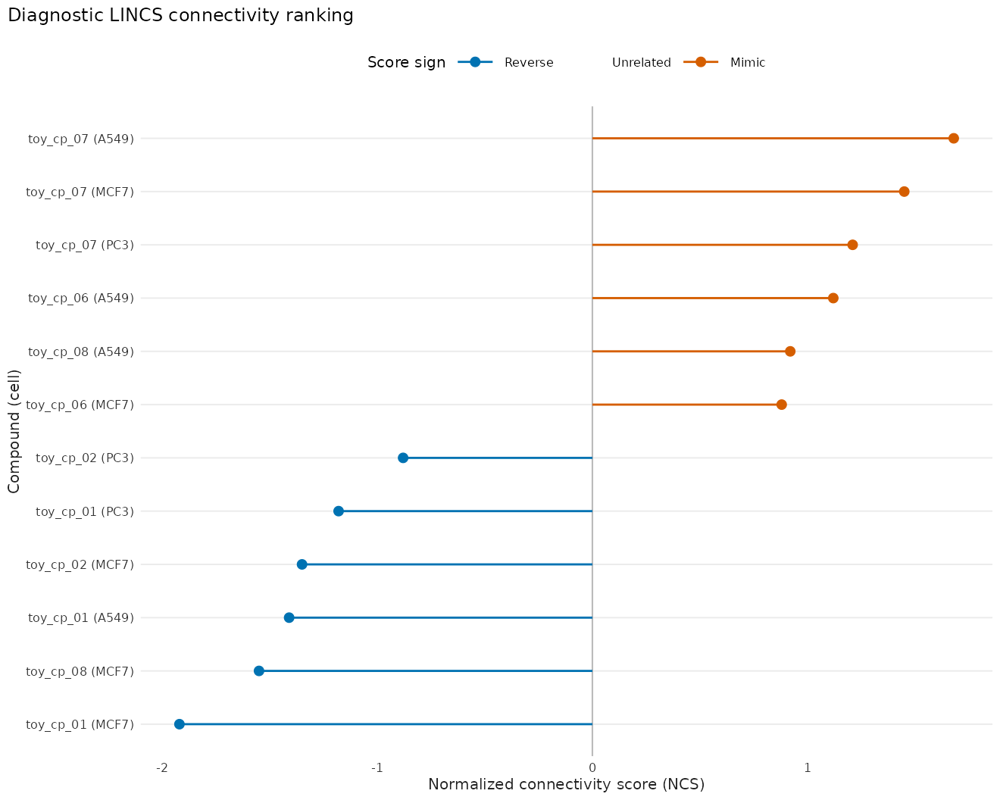
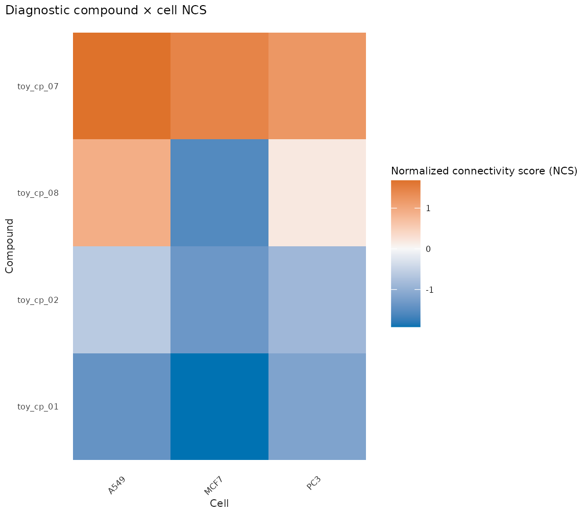
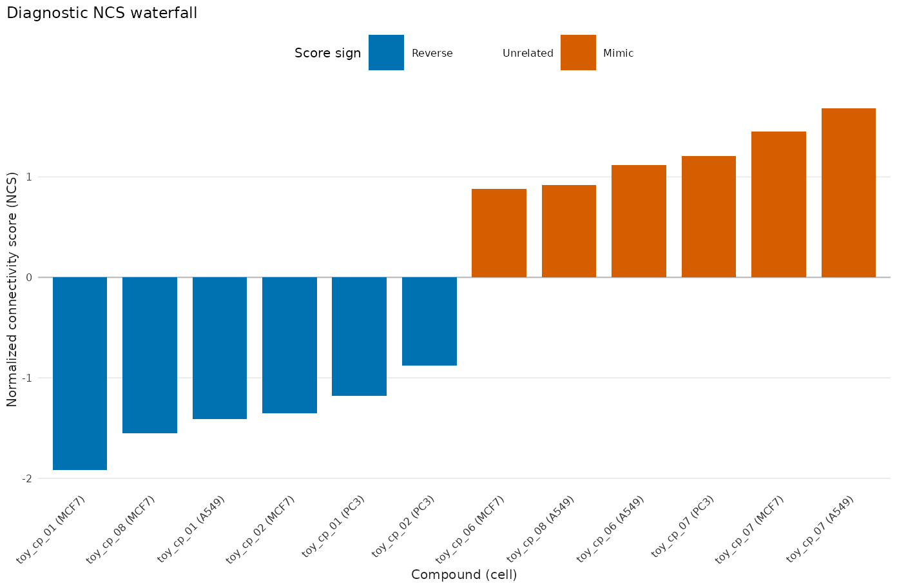

LINCS 反向签名药物假设：连接性分数与图形
bulkMAE
Source:vignettes/lincs-drug-hypothesis.Rmd
lincs-drug-hypothesis.Rmd本文完成什么
本文只回答一个问题：给定一组有方向的 query 基因，哪些化合物签名在
LINCS/CMap
风格的参考库里与它相连，以及连接的方向是反向还是同向。分析入口是 已有的
drug_query() 和
drug_lincs()；drug_lincs_table()
只抽出已经算好的 排名表，不重算 WTCS / NCS / Tau。
完整的 lincs / cmap 预构建库走
ExperimentHub，体积大，也不适合作为普通 vignette
的运行时依赖。本文因此使用 诊断用合成签名 和
drug_lincs_example() 这张与 gess_lincs()
同列的玩具表。图注写明 hypothesis /
diagnostic。这里没有湿实验验证，也没有疗效或用药建议。
生产路径仍然是：
hits <- drug_lincs(
query,
reference_database = "path/to/local_reference.h5",
sort_by = "NCS",
tau = FALSE,
annotations = FALSE
)
ranked <- drug_lincs_table(hits)把 reference_database 写成 "lincs" 或
"cmap" 会触发 signatureSearch 的 缓存下载。教程和默认 CI
都不会那样做。
先固定 query，再谈化合物
CMap / LINCS 的 query 是互斥的上调与下调基因集合，不是整张表达矩阵。
drug_query()
从有限、具名、且同时包含正负值的统计量里分别取两端。用于真实 LINCS
预构建库时，这些 ID 需要先映射成 human Entrez ID；本教程的合成 ID 只
用于演示切分规则。
statistic <- c(
gene_up_a = 3.8,
gene_up_b = 2.6,
gene_up_c = 1.9,
gene_up_d = 1.1,
gene_down_a = -3.4,
gene_down_b = -2.2,
gene_down_c = -1.5,
gene_down_d = -0.8
)
query <- drug_query(statistic, n = 3L)
knitr::kable(
data.frame(
set = c("upset", "downset"),
genes = c(
paste(query$upset, collapse = ", "),
paste(query$downset, collapse = ", ")
),
n = c(length(query$upset), length(query$downset))
),
caption = "合成诊断签名切出的互斥 up/down query"
)| set | genes | n |
|---|---|---|
| upset | gene_up_a, gene_up_b, gene_up_c | 3 |
| downset | gene_down_a, gene_down_b, gene_down_c | 3 |
正值最大的 3 个基因进入 upset，负值最小的 3 个基因进入
downset。两端必须非空且不相交，否则
drug_lincs() 会拒绝搜索。
排名表来自已算好的连接性分数
drug_lincs() 默认按 NCS（normalized
connectivity score）排序。WTCS 是 [-1, 1] 的加权连接性分数；NCS
在细胞系和扰动类型内标准化 WTCS；Tau 只在完整 LINCS 参考库上才有跨 query
的解释。教程表同时带这三列，是为了让坐标轴显示
后端真实返回的分数名，不是因为玩具库可以解释 Tau。
raw <- drug_lincs_example()
ranked <- drug_lincs_table(raw)
n_rows <- nrow(ranked)
n_compounds <- length(unique(ranked$pert))
n_cells <- length(unique(ranked$cell))
score_column <- attr(ranked, "score_column")
n_reverse <- sum(ranked$direction == "Reverse")
n_mimic <- sum(ranked$direction == "Mimic")
knitr::kable(
utils::head(ranked[, c("pert", "cell", "NCS", "WTCS", "Tau", "direction")], 8L),
digits = 2,
caption = "诊断玩具表按 NCS 降序后的前 8 行；Reverse/Mimic 只表示分数符号"
)| pert | cell | NCS | WTCS | Tau | direction |
|---|---|---|---|---|---|
| toy_cp_07 | A549 | 1.68 | 0.70 | 84 | Mimic |
| toy_cp_07 | MCF7 | 1.45 | 0.60 | 72 | Mimic |
| toy_cp_07 | PC3 | 1.21 | 0.50 | 60 | Mimic |
| toy_cp_06 | A549 | 1.12 | 0.47 | 56 | Mimic |
| toy_cp_08 | A549 | 0.92 | 0.38 | 46 | Mimic |
| toy_cp_06 | MCF7 | 0.88 | 0.37 | 44 | Mimic |
| toy_cp_05 | A549 | 0.71 | 0.30 | 36 | Mimic |
| toy_cp_06 | PC3 | 0.64 | 0.27 | 32 | Mimic |
这张表有 24 行、8 个化合物和 3 个细胞系。 当前排序列是 NCS。负分 12
行标成 Reverse，正分 12 行标成 Mimic。bulkmae_lincs_source
为 diagnostic_toy，所以后面三幅图都是诊断图。
drug_lincs_databases() 只列出 ExperimentHub
标识，不下载数据库，也不表示 缓存已经存在：
knitr::kable(
drug_lincs_databases(),
caption = "signatureSearch 预构建库的静态目录；access = online_cached"
)| database | id_type | value_type | experiment_hub_id | access |
|---|---|---|---|---|
| cmap | ENTREZID | log2_fold_change | EH3223 | online_cached |
| cmap_expr | ENTREZID | expression_intensity | EH3224 | online_cached |
| lincs | ENTREZID | moderated_z_score | EH3226 | online_cached |
| lincs_expr | ENTREZID | expression_intensity | EH3227 | online_cached |
| lincs2 | ENTREZID | moderated_z_score | EH7297 | online_cached |
文献常用图
文献里的 CMap / LINCS
结果通常带三幅图：按连接性分数排列的条形或棒棒糖图、 化合物 ×
细胞系热图，以及从反向到同向的瀑布图。包内另外提供 query 上下调
重叠计数图；本文只画前三幅。构造函数只消费已经算好的表，返回未打印的
ggplot，主题为 theme_bulkmae()。
先明确要展示的化合物，而不是看完分数再临时挑选：
display_compounds <- c(
"toy_cp_01", "toy_cp_02", "toy_cp_07", "toy_cp_08"
)
plot_lincs_rank(ranked, n = 12L) +
labs(title = "Diagnostic LINCS connectivity ranking")
图 1：诊断玩具表中绝对 NCS 最大的签名棒棒糖图。蓝色为负分（Reverse），橙色为正分（Mimic）。这是假设生成，不是药效。
plot_lincs_heatmap(
ranked,
compounds = display_compounds
) +
labs(title = "Diagnostic compound × cell NCS")
图 2：四个事先指定化合物在三个细胞系上的 NCS 热图。蓝色表示与 query 反向，橙色表示同向。分数来自诊断玩具表。
plot_lincs_waterfall(ranked, n = 12L) +
labs(title = "Diagnostic NCS waterfall")
图 3：同一诊断表按 NCS 从反向到同向排列的瀑布图。纵轴名称是 Normalized connectivity score (NCS)，因为这张表实际排序的是 NCS 而不是 Tau。
如果后端计算了 Tau，把 score = "Tau"
传给同一组函数，轴名会改成 Tau。 不要在只有 NCS
的结果上把纵轴写成 Tau。
能得出什么，不能得出什么
- 负的 NCS / WTCS 只说明参考签名与 query 在这次搜索里方向相反，可以当作 反向签名假设，不能当作化合物会治疗对应表型。
- 玩具表里的细胞系名（MCF7、A549、PC3）只是为了复现文献热图的行列结构； 分数不是这三株细胞的实验结果。
- Tau 在不完整参考库上没有跨 query
的标准化含义。
drug_lincs(..., tau = TRUE)只应在完整 LINCS 库上打开。 - 重叠计数
N_upset/N_downset是 query 基因落在参考签名极端秩次中的个数， 不是新的富集检验。 - 同一 query 上的 top hits 不是独立验证队列。要做验证，需要另一份参考库、 另一项实验，或湿实验。
复现信息
本文使用 bulkMAE 0.4.1。路线说明见
docs/agents/p1.3-lincs.md。完整会话信息：
sessionInfo()
#> R version 4.6.1 (2026-06-24)
#> Platform: x86_64-pc-linux-gnu
#> Running under: Ubuntu 24.04.5 LTS
#>
#> Matrix products: default
#> BLAS: /usr/lib/x86_64-linux-gnu/openblas-pthread/libblas.so.3
#> LAPACK: /usr/lib/x86_64-linux-gnu/openblas-pthread/libopenblasp-r0.3.26.so; LAPACK version 3.12.0
#>
#> locale:
#> [1] LC_CTYPE=C.UTF-8 LC_NUMERIC=C LC_TIME=C.UTF-8
#> [4] LC_COLLATE=C.UTF-8 LC_MONETARY=C.UTF-8 LC_MESSAGES=C.UTF-8
#> [7] LC_PAPER=C.UTF-8 LC_NAME=C LC_ADDRESS=C
#> [10] LC_TELEPHONE=C LC_MEASUREMENT=C.UTF-8 LC_IDENTIFICATION=C
#>
#> time zone: UTC
#> tzcode source: system (glibc)
#>
#> attached base packages:
#> [1] stats graphics grDevices utils datasets methods base
#>
#> other attached packages:
#> [1] ggplot2_4.0.3 bulkMAE_0.4.1
#>
#> loaded via a namespace (and not attached):
#> [1] gtable_0.3.6 jsonlite_2.0.0 dplyr_1.2.1 compiler_4.6.1
#> [5] tidyselect_1.2.1 jquerylib_0.1.4 systemfonts_1.3.2 scales_1.4.0
#> [9] textshaping_1.0.5 yaml_2.3.12 fastmap_1.2.0 R6_2.6.1
#> [13] labeling_0.4.3 generics_0.1.4 knitr_1.52 htmlwidgets_1.6.4
#> [17] tibble_3.3.1 desc_1.4.3 bslib_0.12.0 pillar_1.11.1
#> [21] RColorBrewer_1.1-3 rlang_1.3.0 cachem_1.1.0 xfun_0.60
#> [25] fs_2.1.0 sass_0.4.10 S7_0.2.2 otel_0.2.0
#> [29] cli_3.6.6 pkgdown_2.2.1 withr_3.0.3 magrittr_2.0.5
#> [33] digest_0.6.39 grid_4.6.1 lifecycle_1.0.5 vctrs_0.7.3
#> [37] evaluate_1.0.5 glue_1.8.1 farver_2.1.2 ragg_1.5.2
#> [41] rmarkdown_2.32 tools_4.6.1 pkgconfig_2.0.3 htmltools_0.5.9